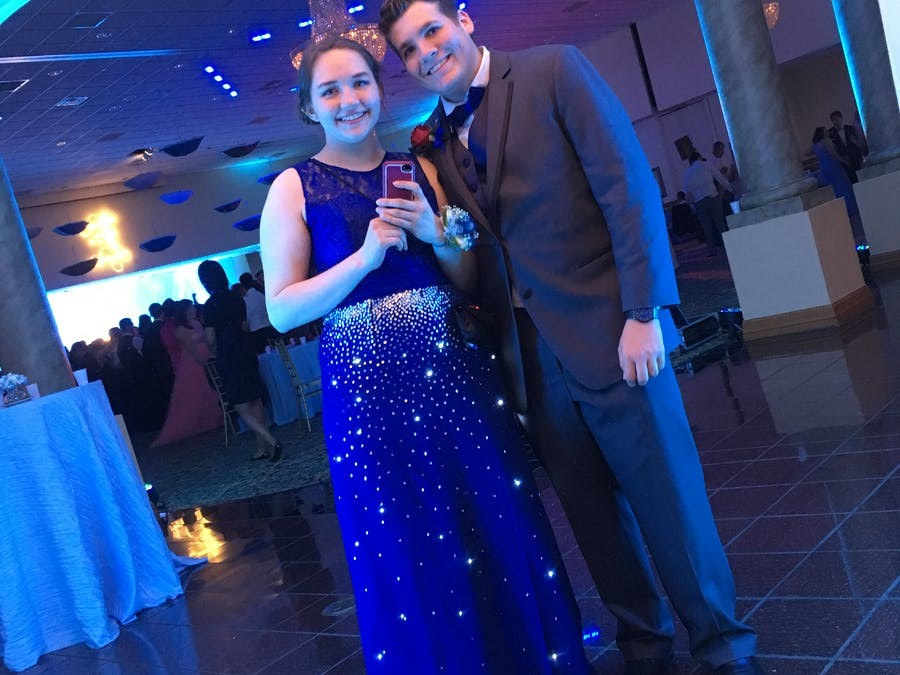
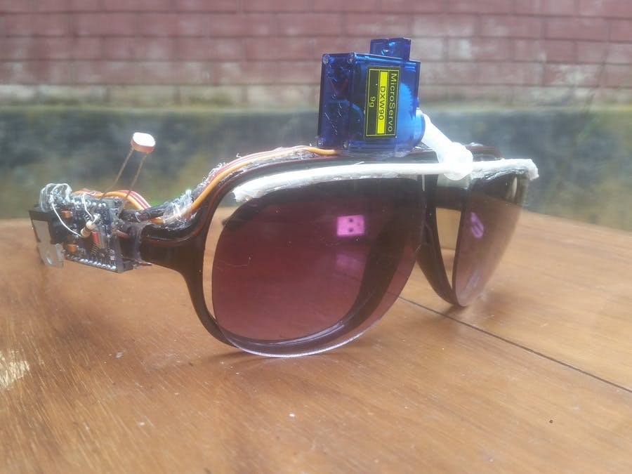
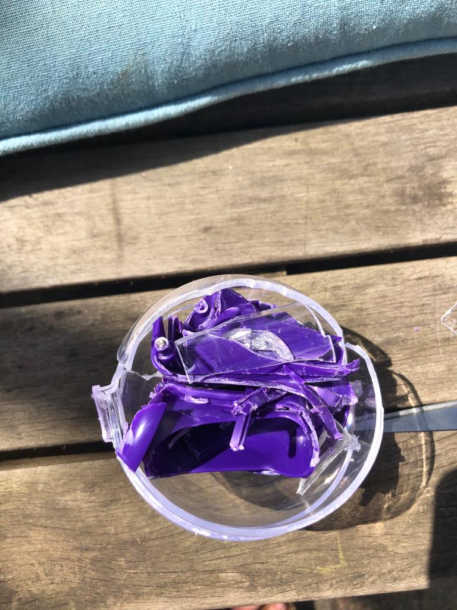
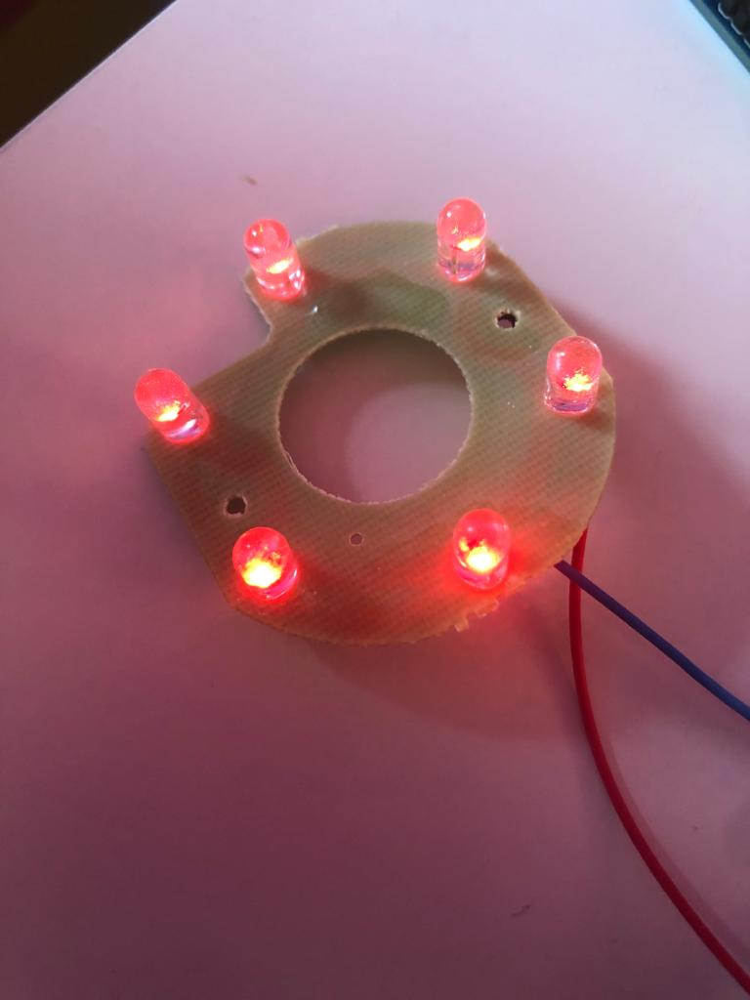
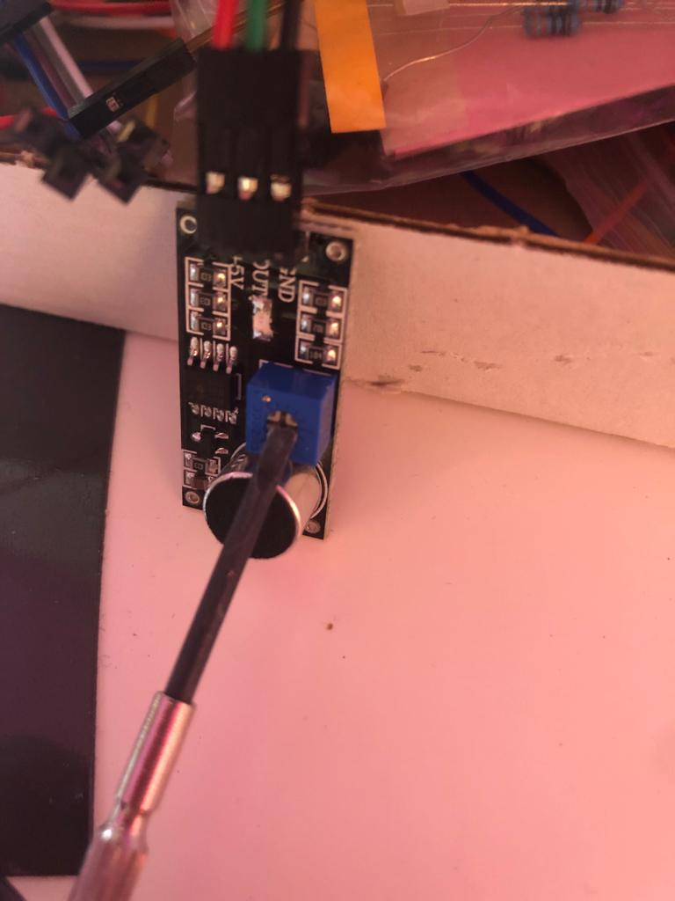

Research
Starry Night prom
Gemaakt door: Maddy
Ik vond dit een heel gaaf project om te zien. Dit is een gala jurk met lichtjes erin. Ik vind het een heel origineel idee om zo uniek te zijn op je gala en vooral dat het zelf gemaakt is. De lichtjes hebben verschillende patronen en ik vind het heel erg leuk om te zien hoe elegant het is. Vaak zijn zelf gemaakte wearables heel technisch en ingewikkeld qua uiterlijk. Het heeft natuurlijk niet een andere functie dan dat het er gewoon heel mooi uitziet, maar dat maakt niet uit.
linkSunGlass-BOT [An Automated Pair of Sunglasses]
Gemaakt door:ashraf_minhaj
Dit is een bril waar automatisch het zonnebril gedeelte naar beneden klapt als het te licht wordt. Eigenlijk beschermt het je eigen als er te veel zon is. Ik vind het een geestig idee ook al ziet het er niet super praktisch uit, aangezien de servomotor enzo best groot is. Ik vind het alsnog leuk bedacht, vooral hoe er gebruikt wordt gemaakt van dingen die je gewoon kan kopen in de winkel in combinatie met Arduino.
linkPunch Activated Arm Flamethrowers (Real Firebending)
Gemaakt door: Allen Pan
Dit is een project waarbij je vuur kan stoten. De arduino meet de stoot beweging en dan komt er vuur. Het is geïnspireerd op de serie Avatar: legende van Aang waar sommige karakters vuur kunnen beheersen. Ik had echt niet verwacht dat er zulke projecten gemaakt konden worden met arduino. Ik vind het heel gaaf. Dit is zeker een wearable die goed zou passen tijdens het maken van een film, dan hoeft het niet geëdit te worden, maar kan je gewoon echt met vuur ‘spelen’.
linkTinkering
Lampjes
In de kit die we van school hebben aangeschaft, zitten alleen maar rode, groene, en gele lampjes bij. Dat vond ik best saai. Ik weet dat je online ook andere kleuren lampjes kan kopen, maar ik wilde graag wat anders proberen. Ik ben naar de stad gegaan en heb twee dingen van speelgoed gekocht, waar LED-lampjes in zaten die van kleur veranderen. Ik heb het uit elkaar gehaald, met wat geweld. En kwam uiteindelijk bij de lampjes. Ik probeerde het eerst gewoon aan te sluiten op het breadboard, maar dat werkte niet. Ik heb toen een male-to-female draadje gepakt en de draadjes van de lampjes daar op aan gesloten. Ik was eerst van plan om de lampjes van kleur te laten te veranderen, maar na ik het had gevraagd op een forum of dat mogelijk was, heb ik dat toch maar opgegeven. Het was zeer ingewikkeld zoals ik begrepen heb. Wel ben ik er achter gekomen dat de lampjes rood zijn als ik weerstand er tussen doe, en zonder weestand het gewone disco patroontje volgen.
Mijn code
Geluidsensor
Ik heb een soundsensor online besteld, omdat het me leuk lijkt om iets te maken dat reageert op geluid. Ik had eigenlijk niet een idee hoe ik hier mee moest beginnen en tutorials online hadden vaak een andere soundsensor dan degene die ik heb aangeschaft. Ik heb er namelijk één met drie pinnen, en er is er ook één met vier pinnen. Na veel hebben gezocht, kwam ik er uiteindelijk uit hoe ik het moest aansluiten. Ik heb het zo aangesloten dat als er geluid is, dat je de geluidsgolven ziet op de serial plotter.
Eerst deed de sensor het vrij slecht. Ik moest heel veel geluid maken voordat het opgepakt werd. Toen ik bezig was met het de design & build kwam ik er achter dat je dit dus kan instellen op je sensor, hoe gevoelig de sensor moet zijn. Dit is een zeer precies werkje, dus ben daar niet erg veel mee bezig geweest tijdens de tinkering fase.

Tekenen met Servomotor
Ik had het idee, aangezien de servomotor draait, dat je als je er een pen aanhangt, dat je dan een mooie cirkel kan tekenen. Ik dacht dus dat dit best simpel zou zijn. Dat vond ik uiteindelijk best tegenvallen. De propellertjes die bij de servomotor zaten waren namelijk te klein. De pen zou dan tegen de servomotor zelf aankomen als ik het daar aan hing. Dus ik heb twee propellertjes aan elkaar geplakt met tape en dan de pen ook met tape eraan vast. De pen werkte dus niet, want je moet best veel druk zetten wil de pen werken en dat doet de servomotor niet. Dus ik heb een klein stiftje eraan geplakt. Dit ging ook niet lekker want ik had het niet goed vast geplakt, dus vloog de tweede propeller over mijn bureau. Na dit allemaal goed vast te plakken, inclusief de servomotor aan het papier, werkte mijn plan, voor letterlijk drie rondjes, maar het is gelukt.
Mijn code
Design & Build
De wearable die ik uiteindelijk ontworpen heb is een partybril. In deze partybril zitten lichtjes die knipperen op het geluid van de muziek. Er zit dan een sensor in de bril die het geluid opvangt en de lichten gaan knipperen op basis van hoeveel geluid er binnen komt. Als de bril goed ingesteld is, gaan de lichtjes knipperen op de beat van de muziek. Dit project heeft met Arduino te maken, omdat het letterlijk gemaakt is met een Arduino, daarnaast past het ook bij het onderwerp van wearable omdat het bedacht is als partybril en een bril kan je dragen.
Bekijk hier het filmpje!Mijn code
Reflect
Ik persoonlijk denk dat (electronische) wearables steeds groter worden in de toekomst, maar ik vind het ook wel moeilijk om dat te bepalen. Aangezien een paar jaar terug, toen de Apple Watch uitkwam, dacht ik zelf ook dat in de nabije toekomst iedereen een smartwatch zou hebben en dat is op dit moment ook nog niet zo. Toch wordt technologie door de jaren heen steeds kleiner, dus dat het uiteindelijk in wearables verwerkt gaat worden verbaasd me niks.
Ik ben best tevreden over mijn eindproduct. Het werkt zoals ik in gedachte had. Ik vind het jammer dat ik het niet echt op de bril kan laten zien, maar de lampjes, de sensor en de arduino zijn gewoon te groot. Ik wilde eerst dat de lampjes verschillende patronen aannemen op het geluid, maar dat werkte niet voor mij. De sensor maakte geen onderscheid tussen hoge en lage tonen, dus daar kon ik niet mee spelen.
Ik heb veel tijd besteed aan het instellen van hoe gevoelig mijn geluidsensor moet zijn. Als ik het te ver zette, reageerde de sensor continu zelfs als ik zelf niks hoorde, maar als de gevoeligheid te laag was, reageerde de sensor juist op niks. De grens was zeer klein. Ik vind het werken met arduino erg lastig en begrijp er zelfs nu nog steeds vrij weinig van, maar met behulp van tutorials ben ik er uit gekomen. Als het lukt met Arduino vind ik het wel een stukje leuker.